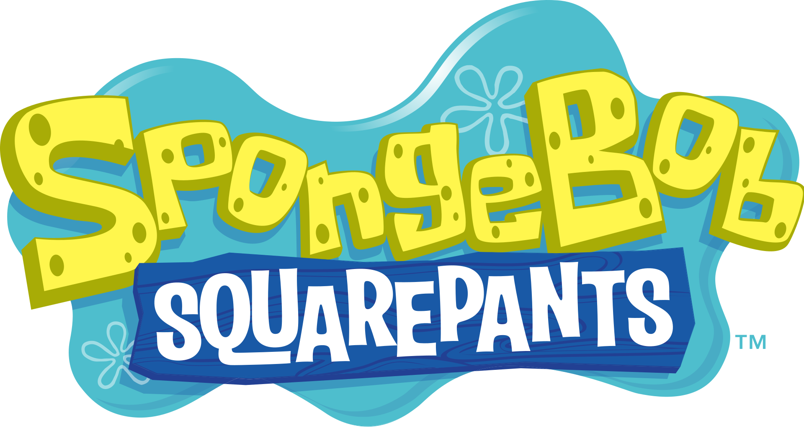
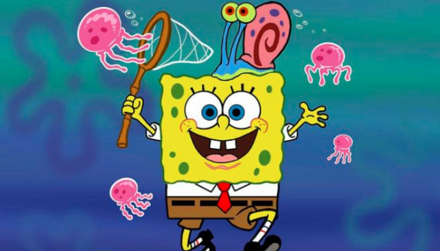
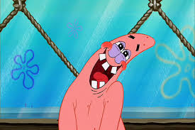
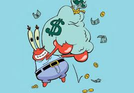
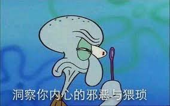
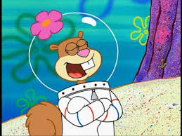
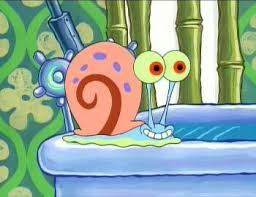
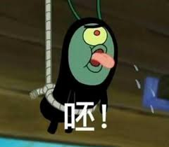

《海绵宝宝》
《海绵宝宝》（英语：SpongeBob SquarePants），是一部美国电视剧情动画系列，1999年在尼克儿童频道开播，比先前同为尼克儿童频道动画的《猫狗》集数还多，创始者是一名海洋生物学家兼动画师史蒂芬·海伦伯格，他同时也是动画制作公司United Plankton Pictures的老板。

海绵宝宝

- 原文名字为SpongeBob SquarePants，华语地区正式译名海绵宝宝是“Sponge”的意译（海绵）与“Bob”的音译（宝宝）之合称。海绵宝宝的全名为海绵宝宝 方裤裤
- 海绵宝宝也是《海绵宝宝》的同名角色及全系列主角的其中之一，特征为黄色的方形海绵， 以棕色短裤、白色衬衫、红色领带和黑色皮鞋为主要服装。居住在作品虚设城市“比基尼海滩”郊区的菠萝屋，并担任当地著名快餐店蟹堡王餐厅的主厨，是蟹老板的最佳员工。有只宠物蜗牛小蜗，而最好的朋友是派大星。
- 海绵宝宝为人乐观开朗，却相当神经质，时常惹出麻烦，而其刺耳的笑声让章鱼哥所讨厌。
- 看似心智不全，实际上很聪明，在绝境中只有他能想出办法。
- 具备自主创新能力，曾制作出好好吃鱼堡、美丽蟹堡和美味热狗，这些食物绝对碾压蟹黄堡。若自己开店生意会比蟹堡王和海之霸加起来还要好。
- 具有再生能力，也拥有伸缩能力，即使身体被四分五裂皆可恢复原状。
- 以厨师为职业，并视自己目前的工作为荣耀(每月最佳员工都是他)，对招牌料理蟹黄堡有崇敬之意。对蟹老板有着不合常理的愚忠，常承担不合理的大量工作和被剥削薪金但不以为然（因为他认为在蟹堡王工作是乐趣）。
- 兴趣是抓水母、吹泡泡和练习空手道。
- 虽在泡芙阿姨的海底驾训班接受长时间课程，却因为路考总是莫名紧张(但带上眼罩就不会感到紧张)。在考了若干次后还是未能考取驾照，而被泡芙阿姨讨厌。
- 崇拜美人鱼战士、企鹅男孩和拉里，和痞老板则时敌时友。
- 力量平常极度微弱，连树枝都举不起来，却可以使用锅铲。有时力量超乎常人，能够投掷灭火器，但力气太大就无法在蟹堡王工作。
派大星

- 原文名字为Patrick Star，通称Patrick，华语地区正式译名派大星是“Patrick”的音译（派大）与“Star”的意译（星）之合称。
- 粉红色的海星，海绵宝宝最好的朋友，也是章鱼哥讨厌的对象之一，身上穿着一条紫色花朵的海滩短裤，在本剧里总是跟海绵宝宝一起闹出不少笑话。没有工作，是蟹堡王的忠实老主顾，但也有时候会去蟹堡王或海之霸工作，但是都只是去当一日员工。
- 傻气、天真的性格却经常说出有寓意的名言却不自知，并且具有相当程度的写实素描能力。
- 拥有再生能力，手断了还可以长回来，但是断肢还会再长回整个身体。
- 经常把事情弄巧成拙，脑空空联谊社核心成员，大脑小到几乎看不到。
- 平时只会待在家里，坐在石头上发懒，视发呆为荣耀，是比基尼海滩最会发呆的人。
- 兴趣是发呆、睡大头觉和大吃冰淇淋。
- 居住在比基尼海滩章鱼哥家旁的一块大型圆形石头底下。外型为红棕色半圆体石头，内部有时候是凹洞并能放置家具（几乎都是由沙子组成），有时候则是平面的。
- 最喜欢吃冰淇淋（尤其是巧克力口味、草莓口味的）。
蟹老板

- 原文名字为Captain Eugene Harold Krabs，通称Mr. Krabs。
- 红色螃蟹，本名蟹阿金（阿金源自“Eugene”中的gene），在海军服役的外号为“铁甲金钟罩（Armor Abs）”。视钱如命（为了金钱连命都可以不要），极为小气（包括女儿），但有时候会请海绵宝宝吃蟹黄堡。育有一女抹香鲸珍珍。外祖父红胡子是名海盗。另外，他还曾和泡芙阿姨一起去约会。
- 快餐店“蟹堡王餐厅（The Krusty Krab）”的经营者，经营始于1980年，招牌口号是POOP（People Order Our Patties，中文译为“大家都来点我们的蟹黄堡”），现任员工有主厨海绵宝宝与收银员章鱼哥。营业时间常于办公室看报纸、数钱、洗金钱浴等。
- 因为他的大量赚钱及小气，使大部分集数成为反英雄的角色。
章鱼哥

- 原文名字为Squidward Quincy Tentacles，通称Squidward Tentacles。
- 属于蓝圈章鱼属物种的大鼻子章鱼。容易愤怒且势利眼。相当自恋，自以为拥有艺术才能。目前是光头，但曾有过黄色长卷发，并希望头发再长回来。
- 居住在比基尼海滩一栋仿复活节岛人像的房屋中，两旁即为海绵宝宝和派大星的家。
- 担任蟹堡王餐厅的收银员，但非常讨厌自己的工作。实而望能成为举世闻名的艺术家。喜欢吹奏竖笛（不过会令人以为家里有垂死的动物在挣扎）及采用多种风格画自画像。
- 很会做菜。（但为了剧情需要，所以也曾做蟹堡做到失火）
- 非常讨厌海绵宝宝和派大星，尤其是海绵宝宝，且往往对他们冷淡以对。但如果没有海绵宝宝和派大星，他的生活会变的空虚乏味。
- 也尝试以不同方法使海绵宝宝搬出家及辞去收银员工作，但辄失败。
珊迪

- 原文名字为Sandy Cheeks，通称Sandy，华语地区正式译名珊迪奇可是“Sandy Cheeks”的音译。
- 来自德克萨斯州的雌性松鼠，也是海绵宝宝的好朋友。曾经是当地的警长，身兼科学家、探险家和发明家。热爱运动（尤其空手道和滑沙）和科学，也是牛仔竞技的冠军。
- 居住在大型半圆形强化玻璃防护罩下的海底树屋，内部环境与陆地相同，且可以季节轮替；若海洋生物入内须配戴装水的头盔，否则会因缺水而死亡（动画中只是差一点就缺水）。
- 由于松鼠属于陆地生物，需要呼吸空气，在海底须穿着宇航服和头盔。
小蜗

- 原文名字为Garold "Gary" Wilson Snail, Jr.，通称Gary the Snail。海绵宝宝的宠物蜗牛，拥有理解自然语言并进行沟通的能力，多数时候待在海绵宝宝家中。十分聪明。
- 底盘会分泌蜗牛黏液，所经之处有时会布满黏液。
- 在某个皇族的族谱中得知，和派大星是表兄弟关系。
痞老板

- 原文名字为Sheldon James Plankton Jr（希尔顿（喜来登）．皮．二世），通称Plankton。
- 是海中的浮游生物（剑水蚤），只有一只眼睛，为人奸诈险恶。蟹老板的死对头，该作品的主要反派角色之一。
- 快餐店海之霸餐厅（Chum Bucket）的老板，餐点奇毒无比，相较于对面的蟹堡王餐厅，完全零客人上门，打广告方面敌不过派大星。
- 为了让自己的餐厅生意兴隆，一直试图偷取蟹堡王著名料理蟹黄堡的秘方，却从未成功。自己却不思进取、从未研发出任何一样能胜过蟹堡王的餐点。
- 有机器人妻子凯伦。
- 曾与蟹老板共同研发蟹堡秘方，后来因为彼此固执己见，致使蟹堡的研发失误（造成第一位顾客食物中毒）而决裂。
- 有时因为对人奸诈险恶而受人践踏。